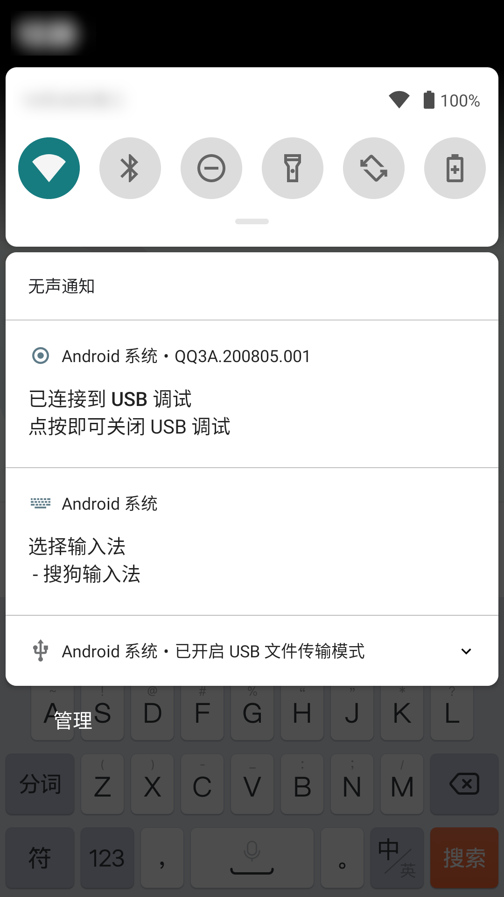
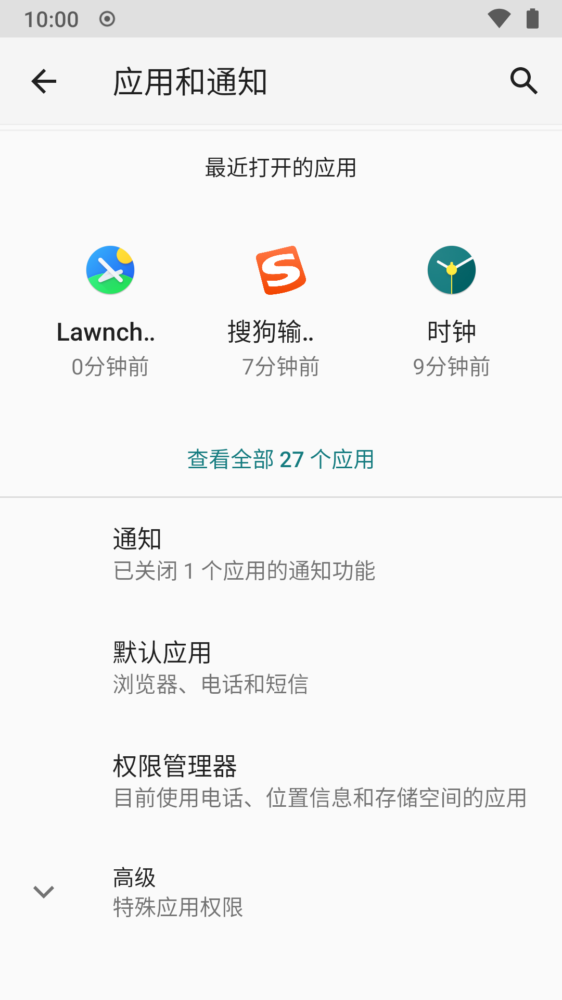
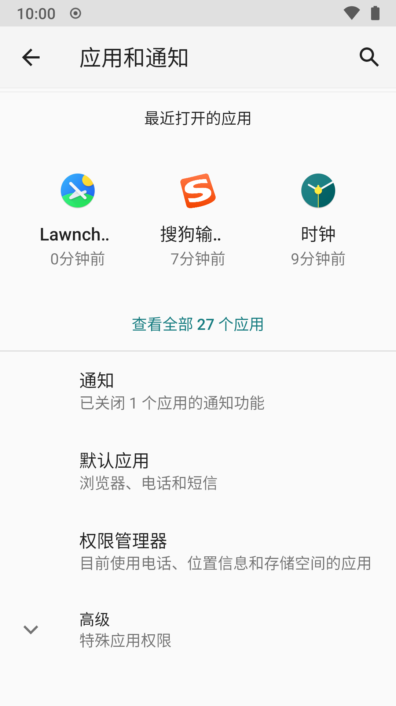
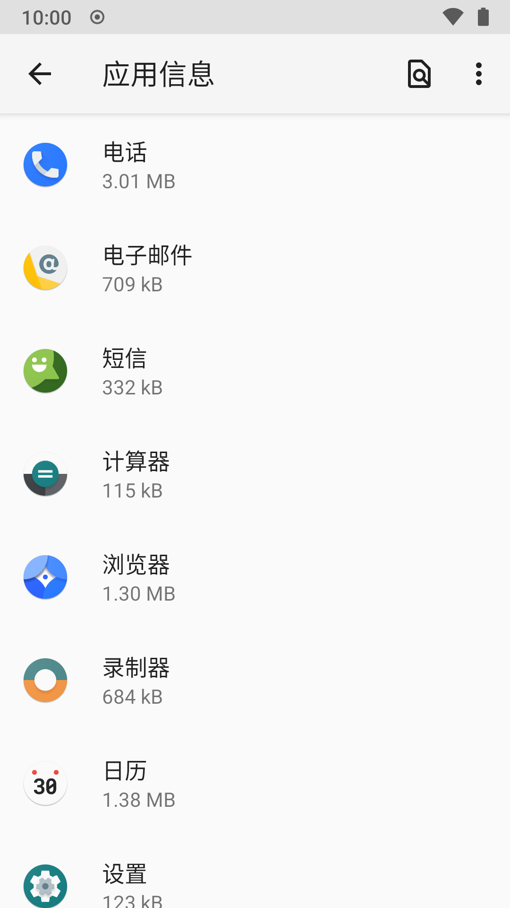
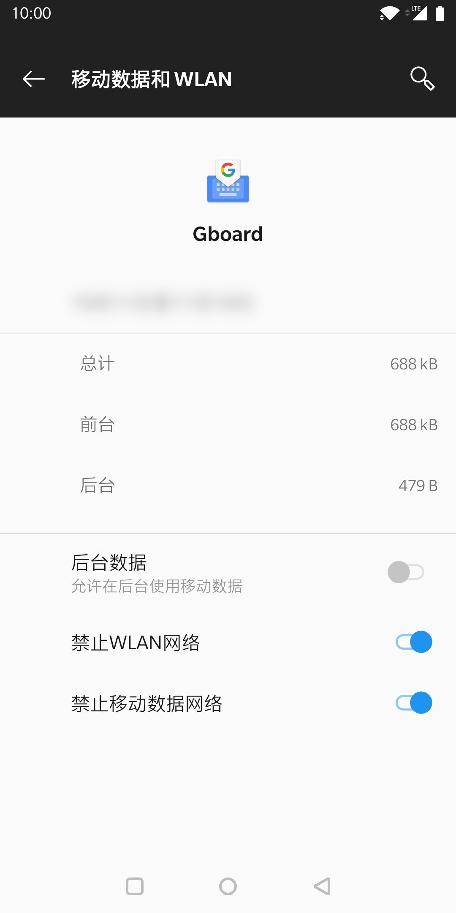
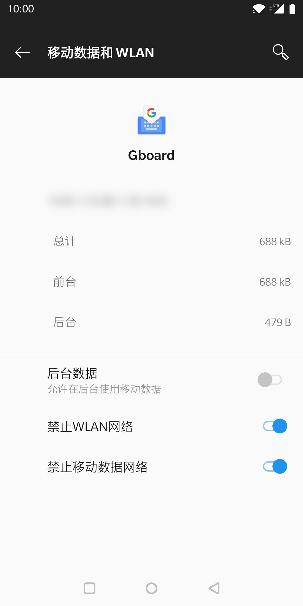
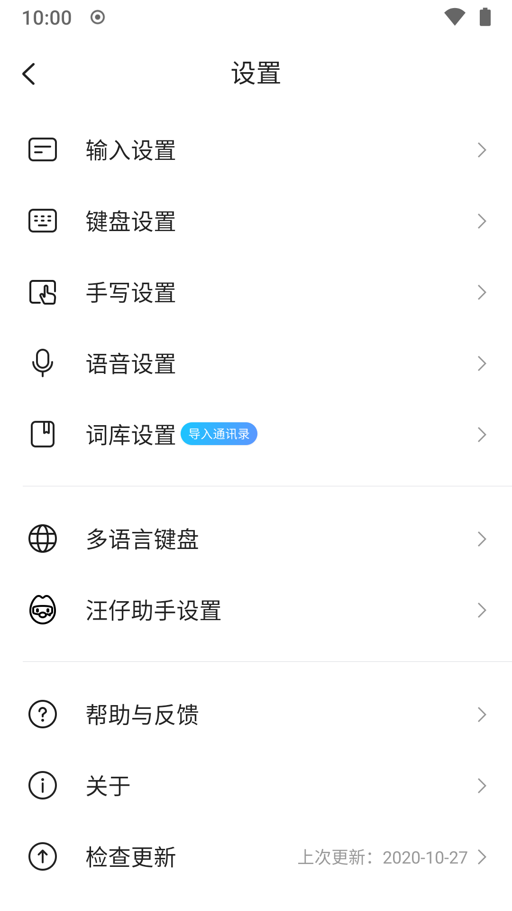
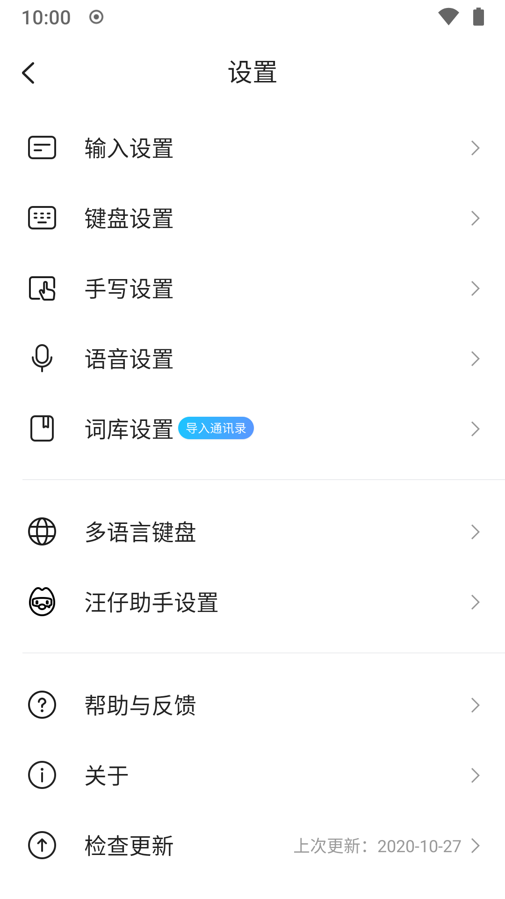

禁止输入法联网
在继续使用当前商业输入法的前提下，禁止它联网是你保护输入隐私的终极办法了。
当你听到断网这个方法时，你可能会觉得它很简单粗暴；但实际上，很多问题是人们自己带来的，并且这些习惯形成了思维定势。你需要学会“为生活做减法”。
比如你要保持一个电脑上的文件不被互联网上的病毒窃取。你花了很多功夫为它进行加固，还配置了杀毒软件和严格的防火墙，并且对这个文件进行了加密。然而在这种情况下，你面对的对手仅仅是来自互联网的病毒；实际上你只需要将其断网，并专门分配一个存储介质用于传输文件即可。
下面 noarch 就教你如何禁止输入法（或任何其它应用）联网，防止它上传任何信息到其服务器上。
一些 AOSP 以及厂商系统没有此功能。如果你发现下面的步骤不适用于自己，请改用同文输入法等不联网的输入法。
确认你当前使用的输入法
首先你要知道你当前在使用什么输入法。一些手机厂商系统会预置多个输入法（例如 MIUI 会预置定制的搜狗输入法和百度输入法）。如果你还不知道你目前使用的输入法，怎么知道该禁止哪个应用联网呢？
找到一个能输入文本的地方，比如你桌面的搜索栏，或是聊天软件的窗口：

保持输入面板打开，然后下拉打开通知栏。你会看到一个用于显示当前输入法的通知，通知上显示着当前输入法的名字。如果你使用全屏手写，点击一次手写区域来停用手写再下滑。
你也可以点击这个通知来看你当前安装的其它输入法，以免和它们产生混淆。
禁止联网
记住你当前使用输入法的名字，然后进入 设置 - 应用和通知。
 

点击 查看全部 [] 个应用，然后在列表里寻找你的输入法。你也可以用右上角的搜索功能来快速查找。
这个列表按照应用名称的拼音首字母顺序排列。以英文字母开头的应用在最底部，同样按照拼音字母顺序排列。
点击对应的应用来进入 应用信息，这里你可以看到卸载，停止以及对应用通知，权限，存储空间以及联网的设定。

在 noarch 使用的 LineageOS 中，对应用的联网控制选项称为 移动数据和 WLAN; 其中的联网总开关称为 允许网络访问。
不同厂商系统的 应用信息 界面不尽相同，有些没有提供一个总开关，而是分别提供了 Wi-Fi(WLAN) 和移动数据的开关；将它们都关闭（禁止）即可。
 

控制权限
noarch 还建议你在 应用信息 - 权限 内拒绝该输入法的所有权限请求，尤其是存储权限。
这样能防止输入法将收集的数据存储在内部存储里，供其它没有被禁止联网的追踪应用读取并且上传。
以搜狗输入法为例，它能在在不被允许任何权限的情况下正常运行。

隐私大户输入法们现在不能 call home 了！
停用云输入功能
禁止输入法联网后，你可能会发现输入法依然尝试加载云输入候选却加载失败。为了解决这个问题，你还要进行一些额外配置来在输入法中禁用这些联网功能，这样它们就不会再尝试进行联网。
下面以2020年10月的搜狗输入法为例，新功能可能会被添加，仅供参考。不同输入法操作不同，但对功能和选项的命名基本相似。
在桌面打开输入法，进入输入法设置：
拒绝 用户体验改进计划。
 

在 输入设置 中，关闭 AI 联想。
滚动到 输入设置 最底部，进入 其它设置；

在 其它设置 里关闭所有你看得见的选项。
长图警告

回到设置主界面，进入 词库设置，禁用 自动更新热词：

最后，在 旺仔助手设置 里禁用旺仔。

到此，你已经禁用了所有能够被禁用的联网功能，这样应该最小化搜狗输入法在被禁止联网后的联网尝试。
总结
无法联网或是与其它应用交流的商业输入法相对联网的商业输入法显然更加安全。
但这种方法不是绝对的：例如这一部分中的一加手机只能控制 Wi-Fi 和数据联网。如果你连接到了一个通过蓝牙共享的网络热点，因为操作系统没有对蓝牙网络进行限制，输入法依然能联网，甚至上传所有你之前的输入数据，使得你前功尽弃。
如果你认为用人不疑，疑人不用，想要进一步的输入隐私，你可以改用不联网，开源自由的同文输入法 Trime.